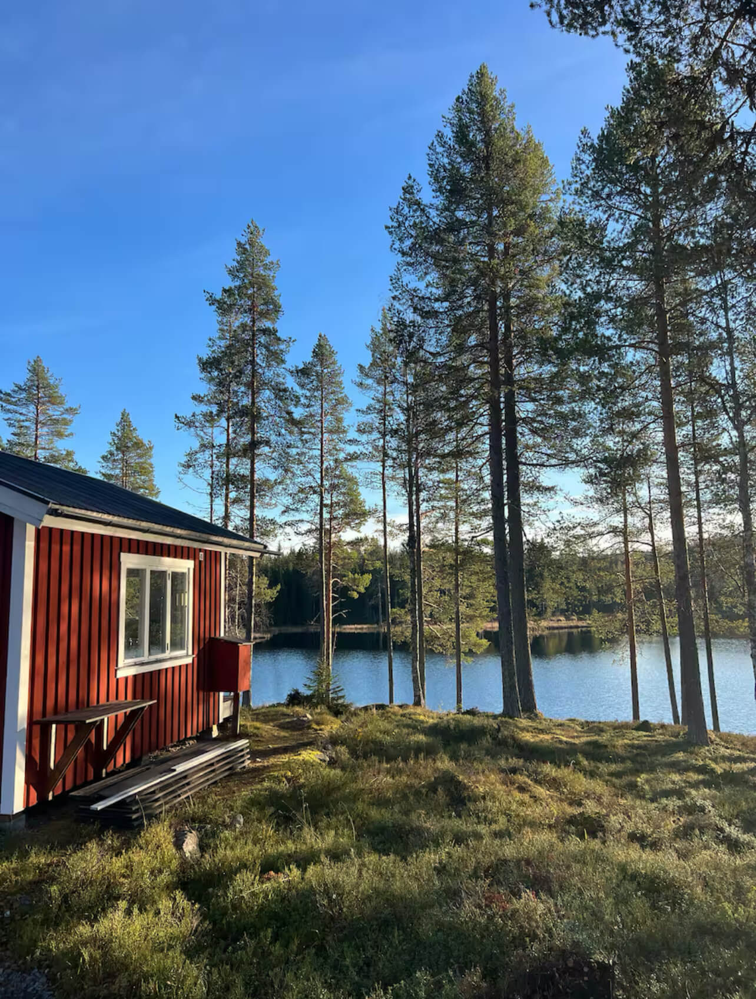
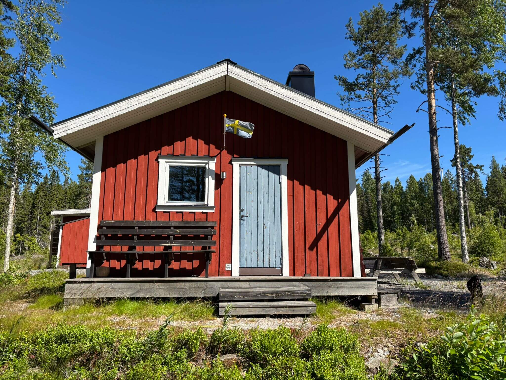
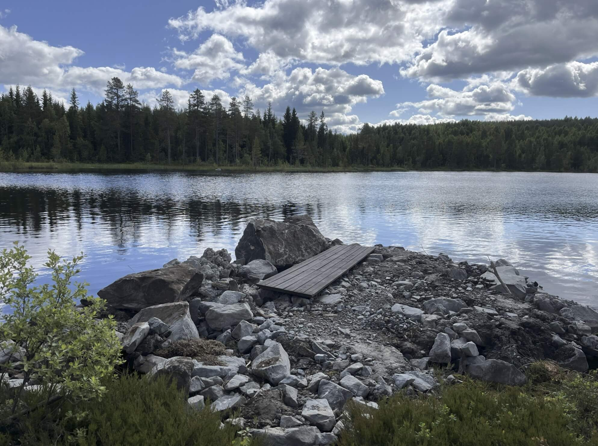
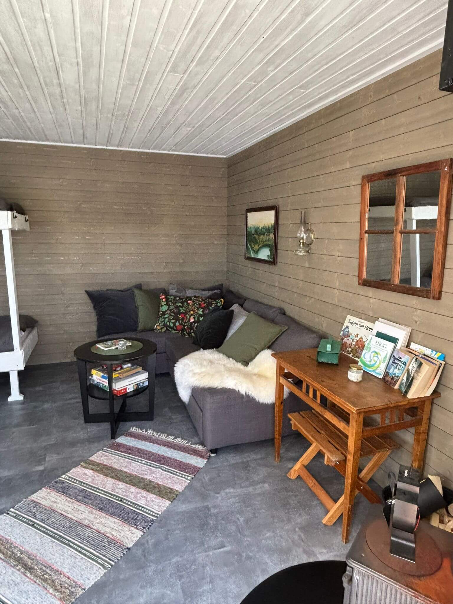
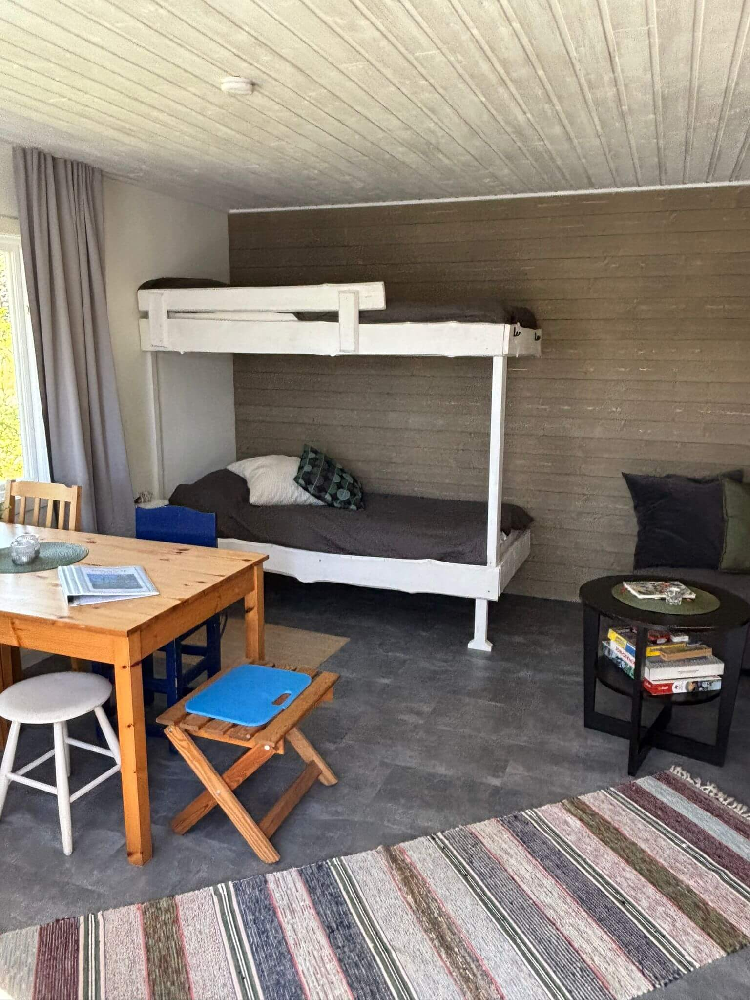
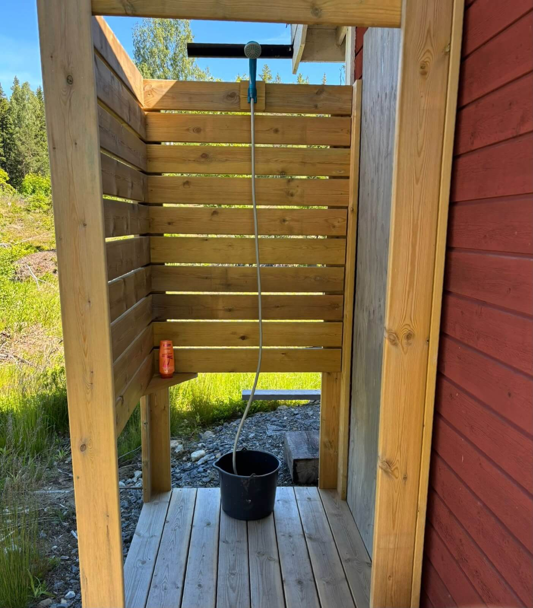
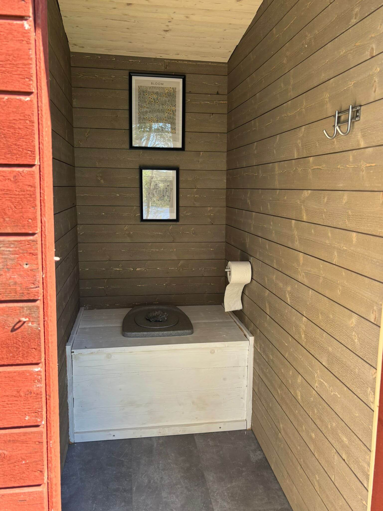

Enkel, avskalad stuga utan el och internet. Koppla bort omvärlden, elda i vedkaminen och vakna upp med spegelblankt sjövatten utanför fönstret.
Sov gott i stugan, koppla av vid elden och njut av fågelsång, kvällsskymning och stilla lugn långt från stadslivet.
Båt och fiskespön ingår utan extra kostnad. Möjlighet för morgonbad, fiske från piren och en tur på sjön.
Långt från trafik och stadsljus. Stjärnhimlen blir din kvällsutsikt och skogen din granne.
Riktig natur, riktigt boende — här är Friden som den faktiskt ser ut. Se filmen från stugan →

Belägen vid en privat sjö utan grannar — mellan Örnsköldsvik och Sollefteå — ger stugan dig en sällsynt chans att uppleva norrländsk natur på egna villkor. Stugan rymmer upp till 4 personer med våningssäng och bäddsoffa. Utrustad med gasoldriven kyl och spis samt vedkamin för kyliga kvällar.

På andra sidan sjön passerar tåg emellanåt — en liten, stämningsfull påminnelse om att omvärlden finns, fast den känns obegripligt långt borta.


Stugan har täcken och kuddar till alla 4 gäster — våningssäng eller bäddsoffa finns beroende på antal.


Ute vid förrådet finns en enkel utedusch samt ett välskött utedass — med möjlighet till originell utsikt.
En av Norrlands dolda pärlor — dramatisk fjällterräng och fantastiska vyer, alldeles nära stugan. Perfekt dagsutflykt för den som vill ut på ordentliga stigar.
📍 Nätra, Västernorrland Läs mer → UtsiktFölj Ormvägen upp mot Hästbacken för en fin utsiktsplats i det närmaste naturområdet. En lättgången promenad som belönas med storslagen vy.
📍 Nära stugan Se karta → PromenadStarta från Hinnsjövägen och följ vägen ned till det lugna Stordegersjön. En avslappnad naturpromenad för hela familjen med fin sjöutsikt.
📍 Från Hinnsjövägen Se karta →Omdömen från gäster som bott på Friden, hämtade från Airbnb.
Vägbeskrivning